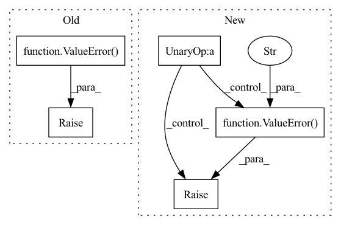

Pattern ID :240
Before Change
def __init__(self, config):
super().__init__()
if config.hidden_size % config.num_attention_heads != 0:
raise ValueError(
"The hidden size (%d) is not a multiple of the number of attention "
"heads (%d)" %
(config.hidden_size, config.num_attention_heads))
self.output_attentions = config.output_attentions
self.num_attention_heads = config.num_attention_heads
self.attention_head_size = int(config.hidden_size /After Change
class RoFormerSelfAttention(nn.Module):
def __init__(self, config):
super().__init__()
if config.hidden_size % config.num_attention_heads != 0 and not hasattr(config, "embedding_size"):
raise ValueError(
f"The hidden size ({config.hidden_size}) is not a multiple of the number of attention "
f"heads ({config.num_attention_heads})"
)
self.num_attention_heads = config.num_attention_heads
self.attention_head_size = int(config.hidden_size / config.num_attention_heads)
self.all_head_size = self.num_attention_heads * self.attention_head_sizeIn pattern: SUPERPATTERN
Frequency: 3
Non-data size: 5
Instances Fragment ID: 696475
Project Name: junnyu/roformer_pytorch
Commit Name: 0cb5500e1ca9c8634d63a5231883b1a99ef0f7f8
Time: 2021-05-17
Author: 573009727@qq.com
File Name: src/roformer/modeling_roformer.py
Class Name: RoFormerSelfAttention
Method Name: __init__
Parent Class: nn.Module
Fragment ID: 696472
Project Name: rikorose/deepfilternet
Commit Name: 0f69126117f7331f093ff1ca76cf0977bd9d6507
Time: 2022-04-12
Author: h.schroeter@pm.me
File Name: DeepFilterNet/df/multistagenet.py
Class Name: FreqStage
Method Name: __init__
Parent Class: nn.Module
Fragment ID: 696468
Project Name: ryantd/veloce
Commit Name: 6275f02f012cd48b84824b7d67f3b13f7a778b3b
Time: 2022-01-04
Author: xiaoyu.zhai@hotmail.com
File Name: phetware/layer/core.py
Class Name: OutputLayer
Method Name: __init__
Parent Class: nn.Module